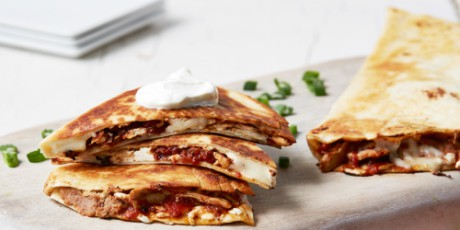

STEWED CHICKEN, REFRIED BEANS AND OAXACA CHEESE QUESADILLAS

Large flour tortillas with a saucy stewed chicken, buttery Oaxaca cheese, and refried beans.
Served on warm tortilla and a side of salsa. You have yourself a delicious meal.
INGREDIENTS
- 1 15-oz can fire-roasted tomatoes
- 2 tsp chili powder
- 1 clove garlic, finely grated
- Kosher salt and freshly ground black pepper
- 1 8-oz boneless skinless chicken breast
- 4 10-inch (burrito size) flour tortillas
- 2 cups shredded Oaxaca cheese
- 1 cup refried beans
- 2 Tbsp unsalted butter
- Guacamole, salsa, chopped scallions and sour cream, for serving
DIRECTIONS
- Combine the tomatoes, chili powder, garlic, 2/3 cup water and 1/2 teaspoon salt in a small saucepan. Bring to a simmer over medium heat and cook, breaking up the tomatoes with a spoon, for 10 minutes. Add the chicken breast, nestling it in the sauce, and simmer, flipping once, until cooked through, 8 to 9 minutes per side. Transfer the chicken to a plate, shred it, and return it to the sauce. Season with salt and pepper.
- Lay a tortilla on a work surface and top evenly with 1/2 cup Oaxaca cheese. Add a quarter of the shredded chicken and tomato sauce and a quarter of the beans. Fold the tortilla in half to enclose the fillings. Repeat with the remaining tortillas and ingredients.
- Melt 1/2 tablespoon butter in a large nonstick or cast-iron skillet over medium heat. Cook one of the quesadillas, flipping once, until golden brown and the cheese is melted, about 3 minutes per side. Remove to a cutting board and repeat with the remaining quesadillas.
- Cut into triangles and serve with the guacamole, salsa, scallions and sour cream.
SOURCE AND CREDITS
Courtesy of Food Network Kitchen
Return to main page